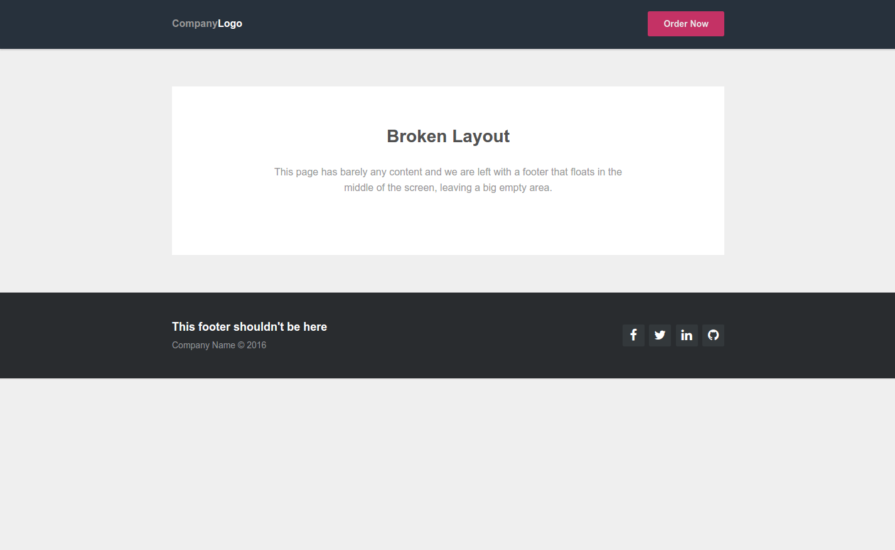
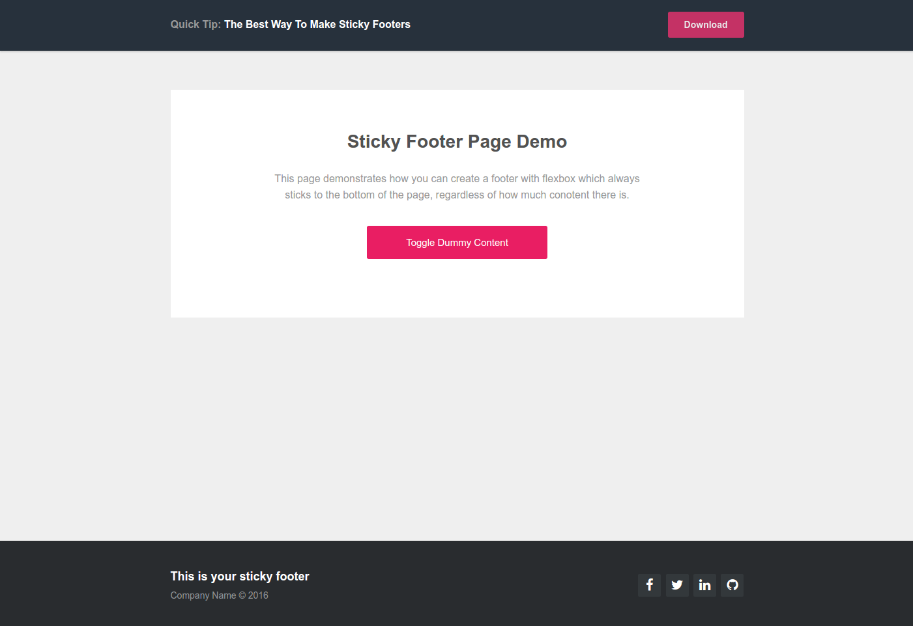

CSS 技巧 -- 制作粘性页脚的最佳方式
转自：简书
这是一篇翻译文，原文地址。
当开发网页布局的时候，有时可能会遇到下面的问题

很明显破坏布局的情形发生了，当你把 footer 固定的放在了 body 的末尾，但是页面却没有足够多的内容。因为没有任何东西能将 footer压下去，所以它被放置在了屏幕的中部，在底下留下了一大块空白。
The Technique
为了防止上述情况的发生，我们可以使用 flexbox 构造我们的页面，这是CSS3 为我们创建自适应布局提供的最先进的工具。 如果你对 flexbox 模型和它的属性不是很熟悉，我将会在本文的末尾提供一组链接。
我们最简单的页面 demo 应该会包含header，主section 和 footer, 下面是 HTML, 没有任何额外的东西。
<header>...</header>
<section class="main-content">...</section>
<footer>...</footer>
为了使用 flex 模型，我们向 body 中添加 display: flex， 而且将主轴改为纵轴（默认的主轴是横轴，是水平布局）。另外，html 和 body 需要 100% 的高度去撑满整个屏幕。
html{
height: 100%;
}
body{
display: flex;
flex-direction: column;
height: 100%;
}
下面我们应该调整每个模块应该占据的空间，我们可以通过 flex 属性去做这件事，它是一个由三个 flex- 属性糅合而成的属性。
- flex-grow: 用于指定容器中的元素能够分到多少可用的空闲空间。
- flex-shrink: 元素应该削减多少当空间不足以放置所有东西。
- flex-basis: 一个元素的默认尺寸。
我们想让 header 和 footer仅占据它们所需要的空间就足够了，而余下的空间全部都留给主 section 那部分。这种布局的 CSS 看起来像下面这样 ：
header {
flex: 0 0 auto;
}
section {
flex: 1 0 auto;
}
footer {
flex:0 0 auto;
}
为了演示这个技巧的功能，让我们通过下面的图片看看效果。

为了看到以上效果，我们还需要添加以下代码用于消除各元素的默认 padding 和 margin
{
margin: 0;
padding: 0;
}
Ending …